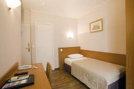
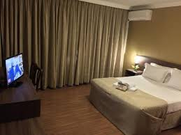
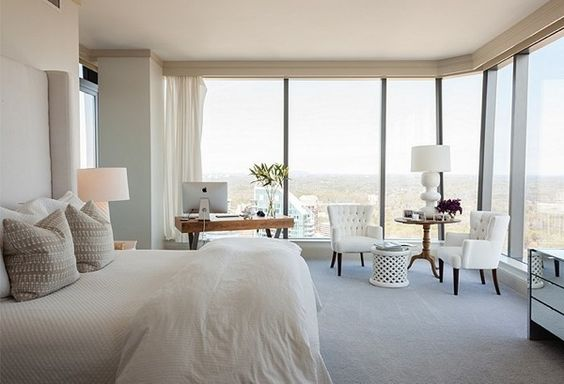

| Quarto básico - Solteiro |
|  | Quarto solteiro (single room, abreviatura: SGL) – quarto de hotel para uma pessoa, com uma cama de solteiro. Dependendo do padrão do hotel, o tamanho pode variar de 8 a 14 m².cama de hotel para uma pessoa, geralmente com um colchão de tamanho 90 cm x 190-200 cm. |
| Quarto básico - Casal |
|  | Quarto de casal (double room, abreviatura: DBL) – é também um quarto destinado a duas pessoas, mas com uma cama de casal. cama de casal (double bed) – cama de hotel para duas pessoas, tamanho de aproximadamente 140 cm x 190-200 cm. |
| Quarto Luxo c/ varanda - Casal |
|  | O conceito de quarto de luxo pode ser interpretado de infinitas maneiras. Para alguns, luxo é sinônimo de conforto e funcionalidade. ... Já para outros, é ter um quarto decorado com elementos requintados, lustres e jogos de cama trabalhados, do tipo “quarto de novela”. |